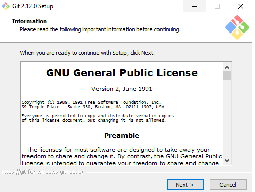

Um sistema de controle de versão (como o próprio nome já diz) tem a finalidade de gerenciar diferentes versões
de um documento. Com isso ele te oferece uma maneira muito mais inteligente e eficaz de organizar seu projeto,
pois é possível acompanhar um histórico de desenvolvimento, desenvolver paralelamente e ainda te oferecer outras
vantagens, como exemplo, customizar uma versão, incluir outros requisitos, finalidades especificas, layout e
afins sem mexer no projeto principal ou resgatar o sistema em um ponto que estava estável, isso tudo sem mexer
na versão principal.
O Git é um sistema open-source de controle de versão utilizado pela grande maioria dos desenvolvedores
atualmente. Com ele podemos criar todo histórico de alterações no código do nosso projeto e facilmente voltar
para qualquer ponto para saber como o código estava naquela data.
Além disso, o Git nos ajuda muito a controlar o fluxo de novas funcionalidades entre vários desenvolvedores no
mesmo projeto com ferramentas para análise e resolução de conflitos quando o mesmo arquivo é editado por mais de
uma pessoa em funcionalidades diferentes.
O GitHub é uma rede social de desenvolvedores. A primeira parte do nome, “Git”, é por causa da utilização do
sistema de controle de versão e a segunda parte, “Hub”, tem a ver com a conexão entre profissionais de
programação de qualquer lugar do mundo.
Inclusive, o GitHub é uma das maiores plataformas online de trabalho colaborativo do mundo. Aqui os usuários
compartilham seus projetos, e pessoas de qualquer lugar do mundo podem trabalhar paralelamente neles.
O GitLab é uma plataforma de gerenciamento e operações de software de ponta a ponta. Com ele, é possível
controlar problemas e gerenciar códigos-fonte, monitoramento o andamento de tarefas por meio de listas e cards,
automatizar processos como testes e publicação de aplicações, além da possibilidade de criar repositórios de
código privados.
Nota: Lembre-se de substituir Jhon Snow e exemplo@seuemail.com.br com seus dados. Qualquer
commit criado posteriormente será associado à esses dados.
Como é a instalação do git no Windows?
Instalar o GIT no Windows é tão simples como baixar um instalador e executá-lo. Execute os seguintes passos
para instalar o GIT no Windows:
Acesse o site oficial e faça o download do instalador do GIT para Windows.
Depois de baixado, clique duas vezes no arquivo para iniciar o assistente de instalação. Basta seguir as
instruções na tela, clicando em Next.

Como configurar o git
O Git vem com uma ferramenta chamada git config que permite ver e atribuir variáveis de configuração que
controlam todos os aspectos de como o Git aparece e opera. Estas variáveis podem ser armazenadas em três
lugares
diferentes:
/etc/gitconfig: válido para todos os usuários no sistema e todos os seus repositórios. Se você passar a opção
--system para git config, ele lê e escreve neste arquivo.
~/.gitconfig ou ~/.config/git/config: Somente para o seu usuário. Você pode fazer o Git ler e escrever neste
arquivo passando a opção --global.
config no diretório Git (ou seja, .git/config) de qualquer repositório que você esteja usando: específico para
este repositório.
Cada nível sobrescreve os valores no nível anterior, ou seja, valores em .git/config prevalecem sobre
/etc/gitconfig.
No Windows, Git procura pelo arquivo .gitconfig no diretório $HOME (C:\Users\$USER para a maioria). Ele também
procura por /etc/gitconfig, mesmo sendo relativo à raiz do sistema, que é onde quer que você tenha instalado
Git
no seu sistema.
git pull verifica mudanças de um repositório e faz a atualização de diretamente para o branch
local.
O que são branches?
"Branches" são uma instancia isolada do reposítório atual, ela permite que você faça modificações no código sem
alterar diretamente o repositório mestre. Tornando possível o envio das alterações posteriormente
Como arrumar uma mensagem errada em um commit?
O comando git commit --amend torna possível a edição do ultimo commit local realizado.
Para modificar commits mais antigos ou vários commits, você pode usar git rebase para combinar uma sequência de
commits em um novo commit base. No modo padrão, git rebase permite que você reescreva o histórico — aplicando os
commits em seu branch de trabalho atual ao head do branch. Como seus novos commits vão substituir os antigos, é
importante não usar git rebase nos commits públicos ou vai parecer que o histórico do seu projeto desapareceu.
O Git é uma incrível ferramenta de versionamento de código, isso significa que, com ele você tem uma visão geral do projeto, sabendo exatamente quando algo foi removido e também adicionado.
O Git torna totalmente possível e organizado o trabalho em conjunto e com base em um cenário onde um grupo de alunos estejam desenvolvendo um projeto da faculdade, todos os integrantes poderiam alterar parte do código podendo visualizar as suas e as demais contribuições realizadas no projeto. Dessa forma, é possível que o código seja analisado e testado antes mesmo dessa contribuição chegar ao projeto final.
Resumidamente, o Git nos traz organização e facilidade durante o desenvolvimento, tornando-se uma ferramentas indíspensal durante o trabalho em conjunto.